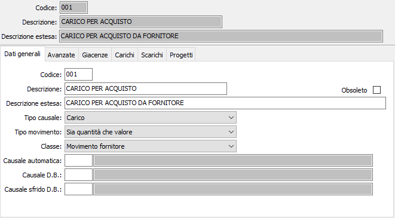
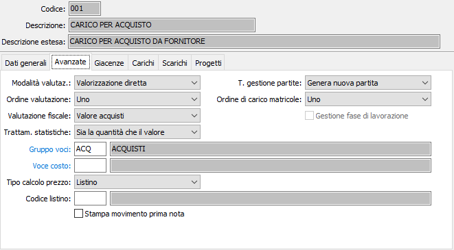
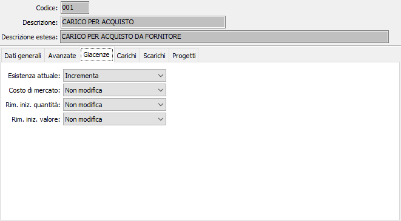
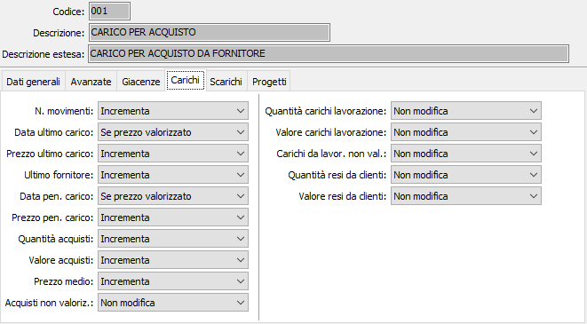
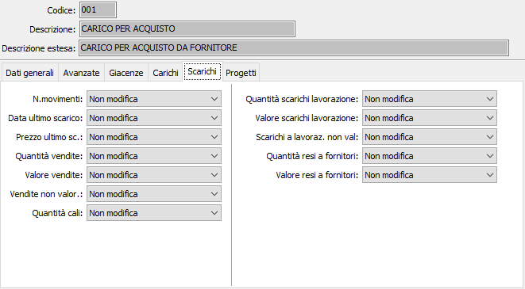
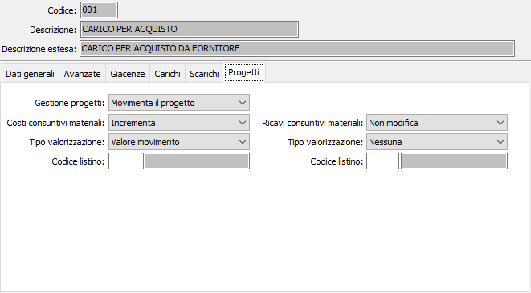

Causali di magazzino
Le causali di magazzino governano la movimentazione degli articoli e la corretta definizione delle varie causali costituisce quindi la condizione essenziale per un soddisfacente impiego della procedura.
Ciascuna causale contiene infatti una serie di indicatori che consentono di movimentare in più o in meno, il valore presente nel campo a cui fa riferimento l’indicatore e di gestire correttamente il movimento di magazzino.
Nelle causali di magazzino sono inoltre previsti flags per l’attivazione di procedure opzionali collegate al magazzino, quali la Gestione della distinta base, la Gestione dei magazzini, la Gestione delle partite o commesse, ecc. Naturalmente tali flags operano solo se tali procedure sono installate.
Le causali di magazzino vengono utilizzate anche dalle procedure di Gestione vendite, Gestione ordini clienti e Gestione ordini fornitori, in quanto l’emissione di taluni documenti (Documenti di trasporto, ecc.) può determinare la creazione interattiva di movimenti di magazzino. Il collegamento tra le diverse procedure è attivato, rispettivamente, dalla Causali Ddt e dalle Causali fatture, che, al loro interno, richiedono l’indicazione della corrispondente Causale di magazzino.
Il programma di manutenzione delle causali di magazzino si articola su 6 pagine video, suddivise in due sezioni. La sezione superiore rimane invariata in tutte le pagine video e contiene le informazioni anagrafiche della causale stessa.
Linguetta dati generali

CODICE: codice alfanumerico di 3 caratteri a libera scelta dell’utente. Sul campo sono attive le funzioni di ricerca (F9) sulla tabella stessa.
DESCRIZIONE: campo alfanumerico di 30 caratteri per inserire la descrizione della causale attiva. Tale descrizione verrà stampata sui vari report attinenti la gestione magazzino.
DESCRIZIONE ESTESA: campo alfanumerico di 60 caratteri per inserire la descrizione estesa della causale attiva. Tale descrizione verrà visualizzata nella vista sulle causali di magazzino durante l’inserimento di movimenti di magazzino, ma non verrà stampata sui vari report attinenti la gestione magazzino.
TIPO CAUSALE: definisce se si tratta di un movimento di carico oppure di un movimento di scarico. Valori ammessi
Carico
Scarico
TIPO MOVIMENTO: normalmente il movimento gestisce sia la quantità che il valore del singolo movimento di magazzino; tuttavia qualora si intenda registrare anche a livello di magazzino eventuali variazioni per differenze di valore (note di credito/debito per differenze di prezzo) si deve trattare solo il valore. Valori ammessi
SIA A QUANTITÀ CHE A VALORE: è il caso normale, per cui in fase di movimentazione prima nota di magazzino viene gestito sia la quantità che il valore.
SOLO A VALORE: da utilizzare nel caso in cui si intenda a registrare a livello di magazzino eventuali rettifiche di valore (ad esempio note di credito/debito per differenze di prezzo); in questo caso in fase di inserimento prima nota viene gestito solo il valore (la quantità viene comunque forzata a zero).
CLASSE: definisce il tipo di movimento che si sta effettuando; l’input di alcuni campi è controllato da questo flag. Valori ammessi:
MOVIMENTO INTERNO: da utilizzare per la registrazione di movimento interni (ad esempio rimanenze iniziali, cali, eccetera).
MOVIMENTO CLIENTE: da utilizzare per la registrazione di movimenti relativi a clienti (vendite, resi)
MOVIMENTO FORNITORE: da utilizzare per la registrazione di movimenti relativi a fornitori (acquisti, resi)
MOVIMENTO DA DISTINTA BASE: da utilizzare per la registrazione di movimenti legati a distinta base. In questo caso nel successivo campo “Causale distinta” deve essere inserita la causale con cui vengono generati i movimenti relativi ai componenti. Al termine dell’inserimento del rigo del composto che ha una distinta base valida vengono automaticamente accodati i movimenti di magazzino.
MOVIMENTO FRA MAGAZZINI: da utilizzare per la registrazione di movimenti fra depositi. In questo caso in fase di inserimento dei dati di testa del movimento viene richiesto anche il magazzino 2; nel successivo campo “Causale automatica” deve essere inserita la causale con cui viene generato il movimento sul magazzino 2.
MOVIMENTO AUTOMATICO: identifica le causali che vengono utilizzate come causali di contropartita della causale principale e quindi non sono utilizzabili direttamente in fase di inserimento prima nota (ad esempio la causale di carico magazzino di destinazione nel caso di trasferimento fra magazzini).
CAUSALE AUTOMATICA: codice alfanumerico di tre caratteri presente nella tabella Causali di magazzino, ed è richiesta solo per i movimenti fra due magazzini. Identifica la causale con cui verrà generato il movimento di magazzino collegato a quello generato alla causale attiva. Ad esempio, in un passaggio fra due magazzini la causale di scarico magazzino di provenienza deve attivare automaticamente, tramite questa causale, un carico magazzino di destinazione. Sul campo sono attive le funzioni di ricerca (F9) sulla tabella causali di magazzino.
CAUSALE DISTINTA: codice alfanumerico di tre caratteri, presente nella tabella Causali di magazzino, che definisce la causale di magazzino con la quale verranno effettuati i movimenti dei componenti della distinta base. L’inserimento di una causale adeguata in questo campo ha senso solo se la causale attiva si riferisce alla movimentazione di un prodotto finito o di un semilavorato, per generare la contestuale corretta movimentazione delle materie prime o dei semilavorati presenti nella relativa distinta base. Sul campo sono attive le funzioni di ricerca (F9) sulla tabella causali di magazzino.
CAUSALE SFRIDO DISTINTA: codice alfanumerico di tre caratteri, presente nella tabella Causali di magazzino, che definisce la causale di magazzino con la quale verranno effettuati gli eventuali movimenti di sfrido relativi ai componenti della distinta base. L’inserimento di una causale adeguata in questo campo ha senso solo se la causale attiva si riferisce alla movimentazione di un prodotto finito o di un semilavorato, per generare la contestuale corretta movimentazione delle materie prime o dei semilavorati presenti nella relativa distinta base. Sul campo sono attive le funzioni di ricerca (F9) sulla tabella causali di magazzino.
Linguetta Avanzate

MODALITÀ VALUTAZIONE: in ciascun movimento di magazzino, per il calcolo del costo merce sono presenti due valori: il valore del movimento e il valore gestionale del movimento stesso. Questo flag controlla la modalità di calcolo del valore gestionale; l'operazione di attribuzione del valore gestionale viene eseguita in modo "batch" attraverso l'apposito programma "Valorizzazione magazzino". I valori ammessi sono:
NESSUNA VALORIZZAZIONE: il movimento, in fase di valorizzazione, viene tralasciato.
VALORIZZAZIONE DIRETTA: il valore gestionale è uguale al valore del movimento di magazzino (ad esempio rimanenze iniziali, acquisti).
VALORIZZAZIONE A PREZZO MEDIO: il valore gestionale è calcolato in base al prezzo medio rispetto alla data del movimento.
VALORIZZAZIONE A COSTO ULTIMO CARICO: il valore gestionale è calcolato in base al prezzo di ultimo carico rispetto alla data del movimento.
VALORIZZAZIONE DA DISTINTA BASE: il valore gestionale è dato dal valore dei singoli componenti; quest'ultimo viene calcolato in base al prezzo medio di carico alla data del movimento.
Particolare attenzione va riservata ai movimenti di rientro da produzione: difatti se si intende registrare in fase di rientro del prodotto finito (dalla procedura di gestione prima nota di magazzino) il valore del composto (limitatamente alle sole materie prime) è necessario impostare il valore del campo "Tipo valorizzazione" a "Valorizzazione diretta", come del resto viene fatto anche sulle causali di carico per acquisto, in maniera tale che il valore viene impostato in fase di registrazione del carico da prima nota e successivamente ribaltato sul valore medio gestionale del movimento.
ORDINE DI VALUTAZIONE: permette di specificare l'ordine con cui i movimenti di magazzino verranno valutati dal programma di valorizzazione. I valori possibili sono compresi fra 0 e 6 (dove 0 indica che il movimento non interessa la valorizzazione, e i valori crescenti da 1 a 6 definiscono l'ordine con cui i vari movimenti verranno valorizzati.
VALUTAZIONE FISCALE: flag significativo in fase di valorizzazione LIFO/FIFO. Definisce la modalità con cui deve essere valorizzata l'eccedenza dell'esercizio. Valori ammessi:
NESSUN TRATTAMENTO: non significativo
VALORI ACQUISTI: il valore viene calcolato in base al prezzo medio di carico del periodo.
VALORI PRODUZIONE: se il prodotto ha una propria distinta base il valore viene calcolato in base al prezzo medio dei carichi da produzione.
TRATTAMENTO STATISTICHE: definisce le modalità di trattamento della causale a livello di statistiche; valori ammessi
SIA LA QUANTITÀ CHE IL VALORE: è il caso normale: viene conteggiata sia la quantità che il valore.
SOLO IL VALORE: viene esclusa la quantità (ad esempio nel caso di rettifiche di valore)
SOLO LA QUANTITÀ: viene escluso dal calcolo il valore (ad esempio nel caso di omaggi)
NESSUNO: vengono escluso dal calcolo sia la quantità che il valore.
TIPO GESTIONE PARTITE: il campo assume significato solo nel caso in cui sia stato definito dalla configurazione del modulo di magazzino che vengono gestiti i progressivi per articolo/partita. I valori ammessi sono:
NESSUNA GESTIONE: non viene generato alcun movimento sulla tabella progressivi partite
GENERA NUOVA PARTITA: viene creato un nuovo record di progressivi per l’articolo e la partita inserita sul rigo del movimento di magazzino
MOVIMENTA PARTITA ESISTENTE: in fase di inserimento documenti e di prima nota di magazzino è possibile selezionare la partita da movimentare da quelle in essere per il prodotto specificato. Al termine della registrazione del movimento di magazzino viene aggiornato la tabella progressivi per articolo/partita.
Ordine di carico matricole: il campo è presente se gestito il modulo Matricole; definisce l'ordine in cui i movimenti di magazzino di carico delle matricole saranno considerati per la determinazione dell'ultimo movimento di carico nel caso di più movimenti di carico nella stessa data. Esempio: carico per acquisto valore 1, carico da produzione valore 2 e carico per trasferimento valore 3.
Gestione fase di lavorazione: il campo è presente se gestito il modulo Produzione o c/to lavoro; se spuntato consente l'aggiornamento dei progressivi di esistenza per fase di lavorazione; necessario per le causali che movimentano il magazzino a fasi.
GRUPPO VOCI: codice alfanumerico di 3 caratteri, non obbligatorio, presente nella tabella Tipologie di costo. Definisce il gruppo di voci di costo accessorie che vengono associate alla causale. Significativo solo nel caso in cui al valore di base del movimento di magazzino (dato dal valore del documento di trasporto) debbano essere aggiunte alcune voci di costo (ad esempio i costi di trasporto nel caso di acquisti oppure i costi di lavorazione nel caso di rientro da produzione). Sul campo sono attive le funzioni di ricerca (F9) sulla tabella stessa.
VOCE COSTO: codice alfanumerico di 3 caratteri, non obbligatorio e presente nella tabella Voci di costo, da utilizzare in alternativa al campo precedente quando è sufficiente una sola voce di costo accessoria. Sul campo sono attive le funzioni di ricerca (F9) sulla tabella stessa.
TIPO CALCOLO PREZZO: il campo consente di proporre, sul rigo del movimento di magazzino, un prezzo per il prodotto selezionato. Valori possibili:
nessuno
Prezzo medio
Costo ultimo carico
Costo di mercato
Prezzo di vendita
Listino
CODICE LISTINO: codice del listino prezzi da utilizzare per ricercare il prezzo del prodotto, se nel campo precedente è stata selezionata l'opzione "Listino". Sul campo sono attive le funzioni di ricerca (F9) sulla tabella listini.
STAMPA MOVIMENTO PRIMA NOTA: se spuntato consente di stampare al termine della registrazione il movimenti di prima nota di magazzino inserito.
Linguetta Giacenze
La linguetta definisce la modalità con cui il movimento di magazzino generato dalla causale attiva deve aggiornare i valori di giacenze visualizzati nell’anagrafica articoli.
Da questa linguetta in poi cambia il significato di valori richiesti. I successivi campi della causale di magazzino corrispondono esattamente ai corrispondenti campi contenute nelle anagrafiche articolo, e in ciascun campo va indicato, coerentemente con la causale attiva, la modalità di aggiornamento del corrispondente campo sull’anagrafica articolo. Gli operatori possibili sono: Non modifica, Incrementa (che vale anche per Sostituisce) e Decrementa.
Ad esempio, impostare a Incrementa il campo Esistenza attuale della causale determinerà l’aumento per la quantità inserita nel movimento di magazzino del valore esistente nel campo Esistenza corrente dell’anagrafica dell’articolo movimentato, relativamente al magazzino movimentato.
In taluni casi, (costo di mercato e Fornitore abituale) Incrementa invece “sostituzione” del precedente valore dell’anagrafica dell’articolo con il nuovo inserito nel movimento.

ESISTENZA CORRENTE: valori ammessi: Non modifica; Incrementa; Decrementa
COSTO DI MERCATO: valori ammessi: Non modifica, Incrementa, Decrementa
RIMANENZA INIZIALE A QUANTITÀ: valori ammessi: Non modifica, Incrementa, Decrementa
RIMANENZA INIZIALE A VALORE: valori ammessi: Non modifica, Incrementa, Decrementa
Linguetta Carichi
La linguetta determina le modalità di aggiornamento dei valori di carico, secondo le modalità già descritte per la sezione Giacenze.

NUMERO MOVIMENTI DI CARICO: valori ammessi: Non modifica, Incrementa
DATA ULTIMO CARICO: valori ammessi: Non modifica, Se prezzo valorizzato, Aggiorna sempre
PREZZO ULTIMO CARICO: valori ammessi: Non modifica, Incrementa
ULTIMO FORNITORE: valori ammessi: Non modifica, Incrementa
DATA PENULTIMO CARICO: valori ammessi: Non modifica, Se prezzo valorizzato, Aggiorna sempre
PREZZO PENULTIMO CARICO: valori ammessi: Non modifica, Incrementa
QUANTITÀ ACQUISTI: valori ammessi: Non modifica, Incrementa, Decrementa
VALORE ACQUISTI: valori ammessi: Non modifica, Incrementa, Decrementa
PREZZO MEDIO: valori ammessi: Non modifica, Incrementa, Decrementa
ACQUISTI NON VALORIZZATI: valori ammessi: Non modifica, Incrementa, Decrementa
QUANTITÀ CARICHI LAVORAZIONE: valori ammessi: Non modifica, Incrementa, Decrementa
VALORE CARICHI LAVORAZIONE: valori ammessi: Non modifica, Incrementa, Decrementa
CARICHI DA LAVORAZIONE NON VALORIZZATI: valori ammessi: Non modifica, Incrementa, Decrementa
QUANTITÀ RESE DA CLIENTI: valori ammessi: Non modifica, Incrementa, Decrementa
VALORE RESI DA CLIENTI: valori ammessi: Non modifica, Incrementa, Decrementa
Linguetta Scarichi
La linguetta determina le modalità di aggiornamento dei valori di scarico, secondo le modalità già descritte per la sezione Giacenze.

NUMERO MOVIMENTI DI SCARICO: valori ammessi: Non modifica, Incrementa
DATA ULTIMO SCARICO: valori ammessi: Non modifica, Se prezzo valorizzato, Aggiorna sempre
PREZZO ULTIMO SCARICO: valori ammessi: Non modifica, Incrementa
QUANTITÀ VENDITE: valori ammessi: Non modifica, Incrementa, Decrementa
VALORE VENDITE: valori ammessi: Non modifica, Incrementa, Decrementa
VENDITE NON VALORIZZATE: valori ammessi: Non modifica, Incrementa, Decrementa
QUANTITÀ CALI: valori ammessi: Non modifica, Incrementa, Decrementa
QUANTITÀ CARICHI LAVORAZIONE: valori ammessi: Non modifica, Incrementa, Decrementa
VALORE CARICHI LAVORAZIONE: valori ammessi: Non modifica, Incrementa, Decrementa
CARICHI DA LAVORAZIONE NON VALORIZZATI: valori ammessi: Non modifica, Incrementa, Decrementa
QUANTITÀ RESE A FORNITORI: valori ammessi: Non modifica, Incrementa, Decrementa
VALORE RESI A FORNITORI: valori ammessi: Non modifica, Incrementa, Decrementa
Linguetta progetti
La linguetta è attiva solo se presente la gestione progetti/commesse e definisce il collegamento tra il magazzino ed i progetti/commesse e ne determina le modalità di aggiornamento dei valori.

GESTIONE PROGETTI: indica se la causale deve movimentare i progetti; valori possibili: nessuna gestione, movimenta il progetto.
COSTI CONSUNTIVI MATERIALI: definisce il metodo di aggiornamento dei relativi valori nei progetti; valori ammessi: Non modifica, Incrementa, Decrementa
TIPO VALORIZZAZIONE: indica il criterio di valorizzazione del progetto. Valori possibili:
nessuno
A prezzo medio
A costo ultimo carico
A costo di mercato
A prezzo di vendita
A prezzo di listino
Valore del movimento
CODICE LISTINO: codice del listino prezzi da utilizzare per ricercare il prezzo relativo alla valorizzazione, se nel campo precedente è stata selezionata l'opzione "A prezzo di listino". Sul campo sono attive le funzioni di ricerca (F9) sulla tabella listini.
RICAVI CONSUNTIVI MATERIALI: definisce il metodo di aggiornamento dei relativi valori nei progetti; valori ammessi: Non modifica, Incrementa, Decrementa
TIPO VALORIZZAZIONE: indica il criterio di valorizzazione del progetto. Valori possibili:
nessuno
A prezzo medio
A costo ultimo carico
A costo di mercato
A prezzo di vendita
A prezzo di listino
Valore del movimento
CODICE LISTINO: codice del listino prezzi da utilizzare per ricercare il prezzo relativo alla valorizzazione, se nel campo precedente è stata selezionata l'opzione "A prezzo di listino". Sul campo sono attive le funzioni di ricerca (F9) sulla tabella listini.